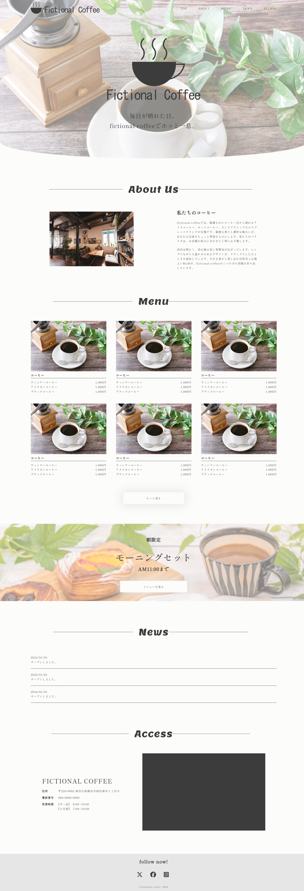

Fictional coffee/webデザイン

制作期間：
三週間
使用した技術：
HTML/CSS/Javascript/Jquery/Photoshop/
ランディングページのようなサイトとJqueryに触れてみたく制作しました。
制作過程
ポートフォリオサイトではページ内項目に飛ぶときにjavascriptを使いましたが、 今回は勉強目的で架空のカフェのサイトを作りつつjqueryを使いました。 ロゴはillustratorが無いのでphotoshopを使い簡易的に作成し前回と同じくワイヤーフレーム＞ デザイン＞コーディングの順番で作業しました。
